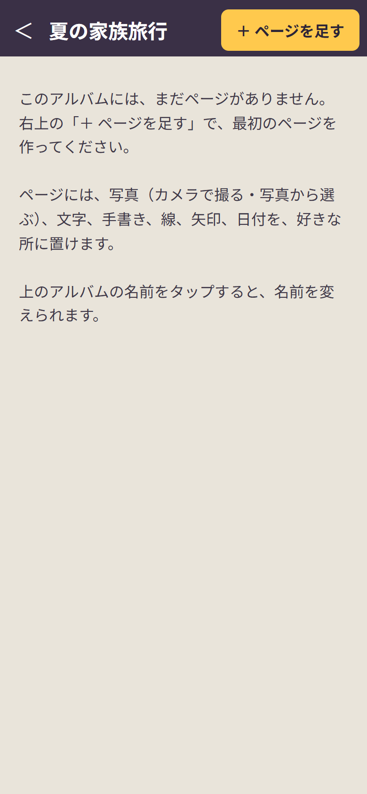
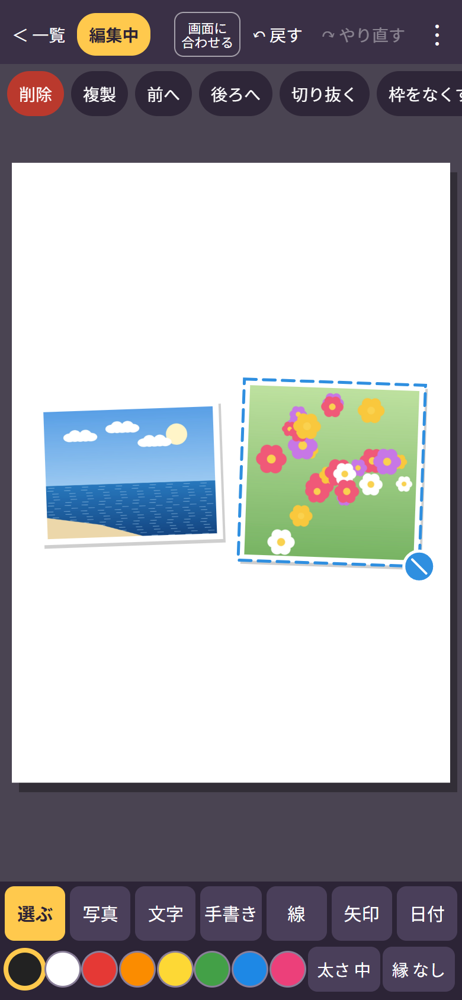
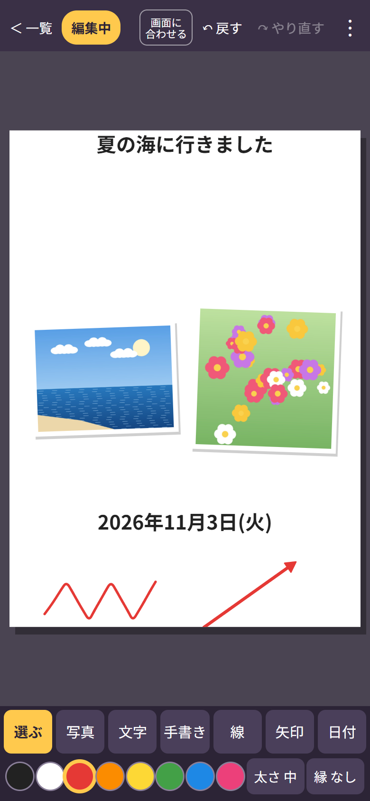
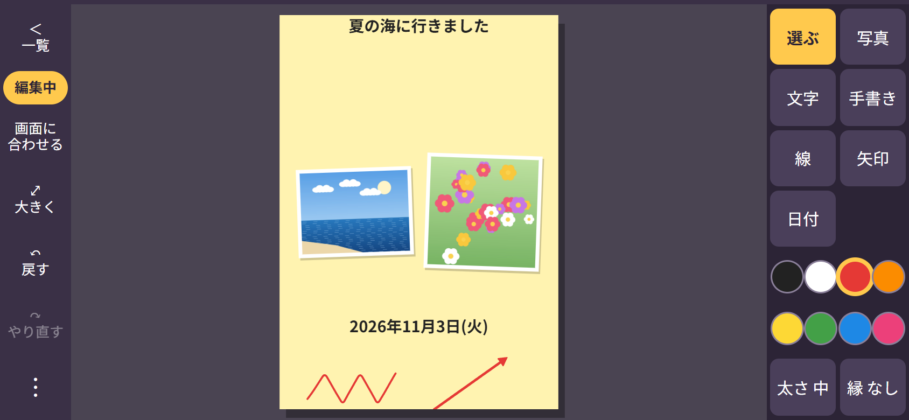
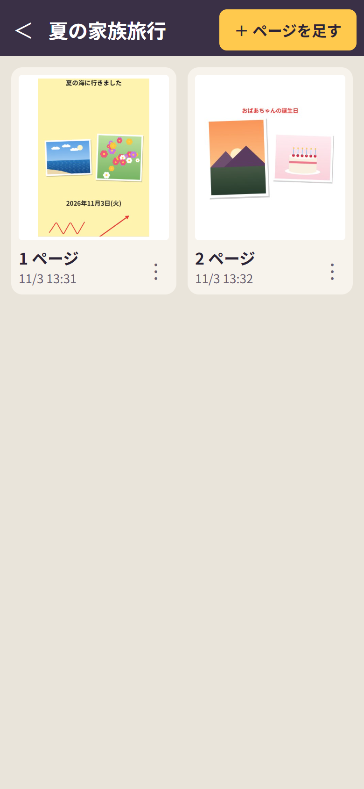
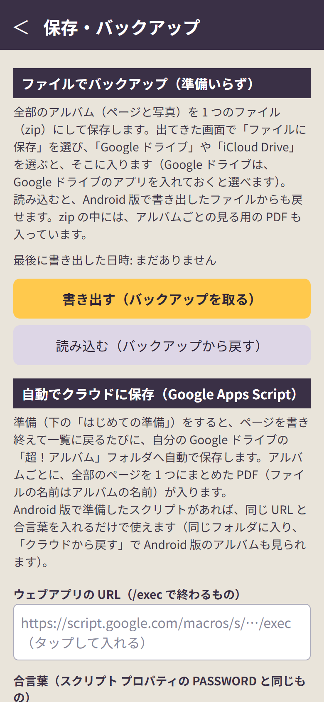

超！アルバム Web 版 使い方マニュアル
（アプリの版: Web 版 v5 2026-11-03 作成）
超！アルバム Web 版は、iPhone や iPad で、1 ページに写真・文字・手書き・線・矢印・日付を好きな所に置いて、自分だけのアルバムを作るアプリです。
Android 版の「超！アルバム」とデータの形が同じなので、バックアップのファイルや Google ドライブで行き来できます。
- アプリのお店（App Store）から入れるものではなく、Safari で開いて「ホーム画面に追加」して使います。
- 写真は iPhone の大きさの画面です。iPad でも同じボタンが並びます。
- 写真の中の「写真」（海・花・夕日・ケーキ）は、説明のために作った絵です。
まず「1. ホーム画面に追加する」から「3. ページを作る」まで読めば、すぐに使えます。
もくじ
- ホーム画面に追加する
- アルバムを作る
- ページを作る（写真・文字・日付・手書き）
- 置いたものを動かす・直す
- 編集中と閲覧中・横向き
- 背景の色を変える
- アルバムの画面・一覧の画面
- 送る・保存する（画像・PDF）
- バックアップを取る（ファイル）
- 自動でクラウド（Google ドライブ）に保存する
- 大切な注意（アルバムが消えないように）
- 困ったときは
- 言葉の説明
1. ホーム画面に追加する
- iPhone（iPad）の Safari で、次の住所を開きます。
https://chocorin0000.github.io/chou-album/
- 画面の下（iPad は上）の共有のマーク（四角から上向きの矢印が出ている絵）を押します。
- 下へなぞって「ホーム画面に追加」を押します。
- 名前が「超！アルバム」になっていることを確かめて、右上の「追加」を押します。
- ホーム画面に、右下に赤い「web」の札がついたアイコンが出れば完了です。
- 次からは、ホーム画面のアイコンから開いてください。 画面いっぱいに使えます。
- 一度開けば、電波がないところでも使えます。
- 新しい版が出たときは、アイコンから開き直すと自動で新しくなります。
2. アルバムを作る

アルバムの画面（まだページなし）
- 右上の「＋ 新しいアルバム」を押します。
- アルバムの名前（例:「夏の家族旅行」）を入れて「決定」。
- 名前を空のままにすると、今日の日付の名前になります。
- アルバムの画面になります。アルバムの中に、ページをいくつでも足せます。
- 上のアルバムの名前をタップすると、名前を変えられます。
3. ページを作る（写真・文字・日付・手書き）
ページを足す
- アルバムの画面の右上「＋ ページを足す」を押します。
- ページの形を選びます: 縦長（A4 の形）／横長（A4 の形）／正方形。
- 白いページと、下に道具のボタンが出ます。
下の道具のボタン
| ボタン |
すること |
| 選ぶ |
置いたものを選んで、動かす・大きさを変える・回す（「4.」） |
| 写真 |
カメラで撮る、または写真を選んで入れる |
| 文字 |
タップした所に文字を入れる |
| 手書き |
指でなぞったとおりに書く |
| 線 |
まっすぐな線を引く |
| 矢印 |
矢じりのついた線を引く |
| 日付 |
今日の日付や今の時刻を入れる |
| 色の丸 |
文字・手書き・線・矢印の色（黒・白・赤・オレンジ・黄・緑・青・ピンク） |
| 太さ |
手書き・線・矢印の太さ（押すたびに変わる） |
| 縁 |
文字や線に白い縁取りをつける（写真の上でも読みやすくなる） |
写真を入れる

写真を 2 枚入れたところ
- 「写真」を押します。
- 「カメラで撮る」または「写真を選ぶ（何枚でも）」。
- 写真を選ぶ画面では、何枚でもまとめて選べます。
- 「入れたらすぐ切り抜く: する／しない」を「する」にすると、写真を入れるたびに切り抜きの画面が出ます。
- 写真がページに並びます。指で動かしたり、角の青い丸で大きさを変えたりできます（「4.」）。
文字を入れる

手書きと矢印も足したページ
- 「文字」を押して、文字を入れたい所をタップします。
- 文字を入れて「決定」。
- 「＋ 今日の日付」「＋ 今の時刻」で、日付や時刻を足せます。
- キーボードのマイクを押すと、声で入れられます。
- 「白い縁取り」にチェックを入れると、写真の上でも読みやすくなります。
- 入れた文字を直したいときは、「選ぶ」で文字をタップ →「文字を直す」。
日付を入れる
- 「日付」を押すと、「2026年11月3日(火)」「13:29」「2026/11/03」「11月3日」などから選べます。
- 日付はページの真ん中に入るので、「選ぶ」で好きな所へ動かします。
手書き・線・矢印
- 「手書き」「線」「矢印」を押して、ページの上を指でなぞります。
- 色の丸で色を、「太さ」で太さを先に選んでおきます。
- まちがえたときは、上の「↶ 戻す」で 1 つ前に戻せます（「↷ やり直す」で戻したのを取り消し）。
ページは自動で保存されます。保存ボタンはありません。左上の「＜ 一覧」でアルバムの画面に戻ります。
4. 置いたものを動かす・直す
「選ぶ」を押してから、置いたもの（写真・文字・手書き・線・矢印）をタップすると、青い点線の枠が出て、上にボタンが並びます。
指でする操作
- 枠の中をなぞると、動きます。
- 右下の青い丸をなぞると、大きさと向きが変わります。
- 2 本指で広げる・縮める・回すと、大きさと向きが変わります。
- 何もない所から四角く囲むようになぞると、囲んだものをまとめて選べます（「2 個」のように数が出ます）。
上に出るボタン
| ボタン |
すること |
| 削除 |
選んだものを消す |
| 複製 |
同じものをもう 1 つ作る |
| 前へ・後ろへ |
重なったときの上下を入れかえる（まとめて選んだときは「一番前へ」「一番後ろへ」） |
| 切り抜く |
写真の要らない所を切る（下の「写真を切り抜く」） |
| 枠をつける／なくす |
写真に白い枠をつける |
| 文字を直す |
文字を書き直す |
| 帯をつける／なくす |
文字の後ろに色の帯をつける |
| 縁をつける／なくす |
文字や線に白い縁取りをつける |
| まっすぐ |
回したものを、まっすぐ（傾きなし）に戻す |
| 選ぶのをやめる |
まとめて選んだのをやめる |
- 選んでいるときに色の丸を押すと、選んだ文字や線の色が変わります。
- ボタンが画面に入りきらないときは、ボタンの段を左右になぞると続きが見えます。
写真を切り抜く
- 写真を選んで「切り抜く」。
- 黄色い角や辺を引っぱって、残す所を決めます。
- 下の「自由」「正方形」「4:3」「3:4」「16:9」「元の写真」で、形を決められます。
- 「決定」。（「やめる」で切り抜かずに戻る）
5. 編集中と閲覧中・横向き
上のボタン
| ボタン |
すること |
| ＜ 一覧 |
アルバムの画面に戻る |
| 編集中／閲覧中 |
押すたびに入れかわる。閲覧中は、さわっても動かないので、安心して見られる |
| 画面に合わせる |
拡大したページを、全体が見える大きさに戻す |
| 送る |
このページを画像や PDF で送る（「8.」） |
| ↶ 戻す・↷ やり直す |
1 つ前に戻す／戻したのをやり直す |
| ︙ |
「送る・保存する」「背景の色（紙の色）を選ぶ」 |
- 2 本指で広げると拡大、2 回トントンとタップすると拡大と全体が入れかわります。
- 閲覧中から書き直したいときは、右下の「✎ 編集する」。
横向き

横向きにしたところ（ボタンが左右に並ぶ）
- iPhone・iPad を横にすると、ボタンが左右の列に並び、ページを大きく見られます。
- 横向きでは、左の列に「⤢ 大きく」が出ます。押すと、ページを画面の幅いっぱいに広げます（2 本指でページを動かせます）。もう一度押すと全体に戻ります。
6. 背景の色を変える
- ページを開いて、右上の「︙」→「背景の色（紙の色）を選ぶ」。
- 白・クリーム・クラフト紙・黄色・桃色・水色・うす緑・うす紫・灰色・紺・深緑・黒から選びます。
- 「このアルバムの全ページをこの色にする（これから足すページも）」にチェックを入れてから選ぶと、アルバムの全部のページが同じ色になります。
7. アルバムの画面・一覧の画面
アルバムの画面

アルバムの画面（2 ページ）
- ページの小さな絵をタップすると、そのページを開きます。
- ページの「︙」で、次のことができます。
| メニュー |
すること |
| 開く |
ページを開く |
| 送る・保存する |
このページを画像や PDF で送る |
| 複製する（すぐ後ろに足す） |
同じページをもう 1 枚作る |
| 前へ動かす・後ろへ動かす |
ページの順番を変える |
| 削除する |
ページを消す |
一覧の画面（いちばん最初の画面）
- アルバムの絵をタップすると、アルバムを開きます。
- アルバムの「︙」: 開く／送る・保存する（PDF）／名前を変える／削除する。
- 右上の「︙」: 保存・バックアップ（Google ドライブ）／この Web アプリについて（版の番号など）。
- いちばん下の帯（「Google ドライブへの自動保存: …」）を押しても、「保存・バックアップ」の画面が開きます。
8. 送る・保存する（画像・PDF）
1 ページを送る
ページを開いて「送る」（またはページの「︙」→「送る・保存する」）。
| 選ぶもの |
すること |
| 画像で送る・保存する |
LINE などで、開いてすぐに見える。「画像を保存」を選ぶと、写真アプリに入る |
| PDF で送る・保存する |
拡大してもきれい。印刷したいときに |
アルバムを丸ごと送る
一覧の画面で、アルバムの「︙」→「送る・保存する」。
| 選ぶもの |
すること |
| 全部のページを 1 つの PDF で送る |
アルバム全部が 1 つの PDF になる |
| 1 ページ目を画像で送る |
表紙だけを画像で見せたいときに |
- どれも、次に iPhone の共有の画面が出ます。LINE・メールなどを選ぶと送れます。「"ファイル"に保存」を選ぶと、「ファイル」アプリ（iCloud Drive など）に保存できます。
9. バックアップを取る（ファイル）
準備なしで、全部のアルバム（ページと写真）を 1 つのファイル（zip）にまとめて保存できます。

「保存・バックアップ」の画面のいちばん上
バックアップを取る
- 一覧の右上の「︙」→「保存・バックアップ（Google ドライブ）」。
- 「書き出す（バックアップを取る）」。
- 共有の画面で「"ファイル"に保存」を選び、「Google ドライブ」や「iCloud Drive」を選んで保存します。
- Google ドライブは、iPhone に Google ドライブのアプリを入れておくと選べます。
- zip の中には、アルバムごとの見る用の PDF も入っています。
- 「最後に書き出した日時」で、いつバックアップしたか分かります。
バックアップから戻す
- 「保存・バックアップ」→「読み込む（バックアップから戻す）」。
- 保存した zip ファイルを選びます。
- 「◯ページを戻しますか?」→「戻す」。
- 今あるアルバムは消えません（ないページを足します）。
- Android 版で書き出したファイルからも戻せます。
10. 自動でクラウド（Google ドライブ）に保存する
準備をすると、ページを書き終えて一覧に戻るたびに、自分の Google ドライブの「超！アルバム」フォルダへ自動で保存します。アルバムごとに、全部のページをまとめた PDF（名前はアルバムの名前）が入ります。
スクリプトの準備（はじめてのときだけ・パソコンがおすすめ）
Android 版で準備が済んでいれば、ここはいりません。同じ URL と合言葉を入れるだけで使えます（同じフォルダに入り、Android 版のアルバムも戻せます）。
超！手書きのスクリプトとは別のものです。別のプロジェクトを作ってください。
- パソコンのブラウザで https://script.google.com/ を開き、「新しいプロジェクト」を作ります（名前は「超！アルバム保存」など）。
- スクリプトの文を用意します。
- パソコンで https://chocorin0000.github.io/chou-album/Code.gs.txt を開き、全部コピーします。
- スマホでするときは、アプリの「スクリプトをコピー」でコピーできます。
- 最初からある文（
function myFunction() { … }）を全部消して、コピーした文を貼り、保存します。
- 左の歯車（プロジェクトの設定）→ いちばん下の「スクリプト プロパティを追加」→ プロパティに PASSWORD、値に好きな合言葉 →「スクリプト プロパティを保存」。
- 右上の「デプロイ」→「新しいデプロイ」→ 種類の歯車で「ウェブアプリ」→ 次のユーザーとして実行「自分」、アクセスできるユーザー「全員」→「デプロイ」。
- 「アクセスを承認」→ 自分のアカウント →「詳細」→「（安全ではないページ）に移動」→「許可」。
- 自分で作ったスクリプトなので心配いりません。Google の審査を受けていないので出る表示です。
- 出てきたウェブアプリの URL（
https://script.google.com/macros/s/…/exec）をコピーして、メールや LINE で自分の iPhone に送ります。
アプリに入れる
- 「保存・バックアップ」の「ウェブアプリの URL」の欄を押して、URL を貼り付けます。
- 「合言葉」の欄を押して、PASSWORD と同じ合言葉を入れます。
- 「書き終えたら自動でクラウドに保存する」にチェックを入れます。
- 「保存して、つながるか試す」。「つながりました」と出れば完了です。
- 今までのアルバムもすぐ送りたいときは「今すぐ全部をクラウドに保存」。
Google ドライブに保存されるもの
| 場所 |
中身 |
| マイドライブ ＞ 超！アルバム |
アルバムの名前の PDF（見る用） |
| 超！アルバム ＞ 復元用データ |
アプリに戻すためのデータと写真。さわらないでください |
| 超！アルバム ＞ 消したもの |
アプリで消したページ・アルバム（クラウドからは消えません） |
クラウドから戻す
- アイコンを追加し直したときや、ほかの iPhone・iPad で使うときは、URL と合言葉を入れてから「クラウドから戻す」→「戻す」。
- 写真もいっしょに戻すので、Wi-Fi のときがおすすめです。
- Android 版で作ったアルバムも戻せます。
11. 大切な注意（アルバムが消えないように）
Web 版のアルバムは、iPhone（iPad）の中の、このアプリ専用の場所に入っています。
次のようなときは、iPhone の中のアルバムが
消えてしまいます。
- ホーム画面のアイコンを削除したとき
- 設定の「Safari」→「履歴と Web サイトデータを消去」をしたとき
- iPhone の空き容量がとても少なくなったとき（iPhone が自動で消すことがあります）
- 「10. 自動でクラウドに保存する」の準備をしておくのがいちばん安心です。 アイコンを追加し直しても、「クラウドから戻す」で戻せます。
- クラウドの準備をしていないときは、ときどき「9. バックアップを取る」で zip を保存してください。
- アイコンを追加し直したときは、URL と合言葉も入れ直す必要があります。
12. 困ったときは
| こんなとき |
どうする |
| まちがえて動かした・消した |
上の「↶ 戻す」 |
| 見ているだけなのに動いてしまう |
「編集中」を押して「閲覧中」にする |
| 拡大したまま戻らない |
「画面に合わせる」、または 2 回トントンとタップ |
| ボタンが画面に入りきらない |
ボタンの段を左右になぞる |
| 写真が入らない（「◯枚は読めませんでした」） |
別の写真で試す。iCloud にしかない写真は、写真アプリで一度開いてから選ぶ |
| 「つながりませんでした。合言葉が違います」 |
スクリプト プロパティの PASSWORD と同じか確かめる（大文字・小文字、空白に注意） |
| 「答えが読めません。URL が正しいか…」 |
URL が /exec で終わっているか、デプロイの「アクセスできるユーザー」が「全員」か確かめる |
| 超！手書きの URL を入れてしまった |
超！アルバム用のスクリプトは別です。「10.」の準備をする |
| どの版か知りたい |
一覧の右上「︙」→「この Web アプリについて」 |
13. 言葉の説明
| 言葉 |
意味 |
| Web 版（ウェブばん） |
アプリのお店から入れずに、ブラウザ（Safari）で開いて使うアプリ |
| ホーム画面に追加 |
Safari で開いたページを、アプリのようにアイコンから開けるようにすること |
| Google ドライブ |
Google の、インターネット上のファイル置き場（無料で 15GB） |
| クラウド |
インターネット上の保存場所。ここでは自分の Google ドライブのこと |
| Google Apps Script（GAS・ガス） |
Google が無料で用意している、小さなプログラムを動かすしくみ。アルバムを Google ドライブに保存する係 |
| デプロイ |
作ったスクリプトを、アプリから使えるように公開すること |
| URL |
インターネット上の住所。https:// から始まる文字の並び |
| 合言葉（PASSWORD） |
自分だけがスクリプトを使えるようにするための暗号。人に教えない |
| PDF |
見た目をそのまま保つファイル。どの機械でも同じように見え、印刷もできる |
| zip（ジップ） |
たくさんのファイルを 1 つにまとめたファイル |